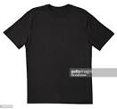
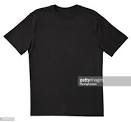

PRODUCT
CROP TOP
php 139.00
A crop top t-shirt is a type of t-shirt that is typically shorter than traditionalt-shirt,usually ending just above the natural waisline.
 DRESS
php 200.00
A dress is a garment typically of a lenght that reaches from the shoulders to the ankles,which typically consists of a bodice and skirt.

T-SHIRT
php 150.00
A style og fabric shirt named after the t shape of its body and sleeves.
DRESS
php 200.00
A dress is a garment typically of a lenght that reaches from the shoulders to the ankles,which typically consists of a bodice and skirt.

T-SHIRT
php 150.00
A style og fabric shirt named after the t shape of its body and sleeves.